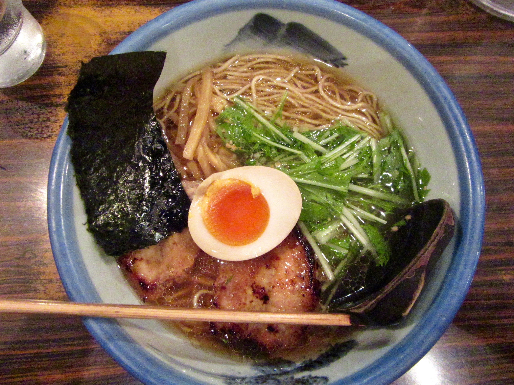

We got a taste of Japanese hospitality before we even landed, when the flight attendants surprised us with a hand-drawn card and a dessert platter that spelled out "Happy Honeymoon." We stayed in a tiny airbnb in Shibuya for six nights, walked until our feet hurt, and ate amazing ramen nearly every day. We cheered with the crowd at a sumo tournament in Roppongi, drank beer with the locals at the Keyaki beer festival, and explored the maze of tiny tucked away bars in Golden Gai at night.
Kyoto was stunningly beautiful, with its fairytale gardens and ancient shrines. Lots of tourists too. We didn't see any geisha, but we saw plenty of young women dressed up in traditional geisha attire, negotiating the hilly cobblestone streets in their socks and thick wooden sandals. We explored the bamboo forest and fed peanuts to macaque monkeys on Mt Arashiyama, and relaxed in steaming onsens after a strenuous hike in the neighboring towns of Kurama and Kibune. Spending one night in a 150-year-old Ryokan made us feel like Japanese royalty.


Osaka was the perfect note to end on. A modern-day city with a laidback vibe, Osaka offered an endless number of restaurants, bars, and shopping. No more temples or historic sites to check off our list. The only pressure we felt was to consume as much as possible before we had to leave. We shopped in a mall that resembled a canyon, played Golden Eye at a bar that had every video game and console in existence, discovered Japanese denim, and (one of us) got a tattoo to remember the trip by.